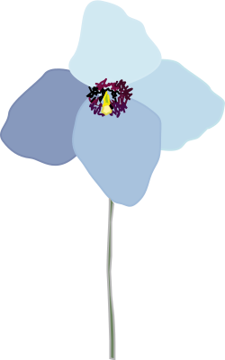

| Preparation |
|---|
| [Chapman] Chapter 3 + 5 (A lot of pages. I will go through the most relevant parts) |
| Slides |
|---|
| Chapter 3 - Vector Graphics |
| Chapter 5 - Colour |
| Exercises |
|---|
| Useful links Inkscape Inkscape keyboard and mouse reference Inkscape tutorials More Inkscape tutorials Color IQ Test(The ability to distinguish between colors is different from person to person. This test can tell you how good you are at it) Interesting video about colors(Mostly about the weird color brown) |
| Exercise 1 - Basics Spend some time getting used to the program you are using. Try adding some of the different elements (rectangles, circles, polygons, freehand lines, Bezier curves, etc). Play around with some of the different options for fill and stroke. Use some of the different transformations(translate, scale, rotate, skew). Try adding objects with different transparency settings on top of each other. When you feel you have a good basic understanding of how to work with vector graphics, then you should be ready to move on. Exercise 2 - Vector drawings Use your skills to create a drawing using vector graphics. A few examples of what can be done in Inkscape is this frog and this poppy flower. You can download these two examples as svg files to get an idea of how it's done (right-click on the links and save). Exercise 3 - Trace bitmap Use the trace bitmap function to convert a bitmapped image into a vector image. Play around with the different settings to try and get a fairly good looking image without the file size getting too big. You can use any bitmapped image you like, but remember that the more detailed the image is, the worse it will probably look when converted. Exercise 4 - Tutorials Follow one or more of the Inkscape tutorials to learn how to create some pretty cool images and effects (when I checked some of the older tutorials no longer seem to be working, so you might have to scroll a bit to find one you find interesting and that is actually working). There are also More Inkscape tutorials here. |
{kind=link}
{kind=link}